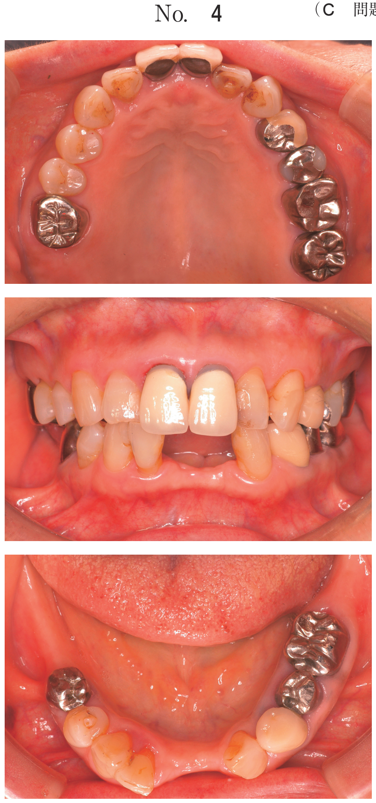
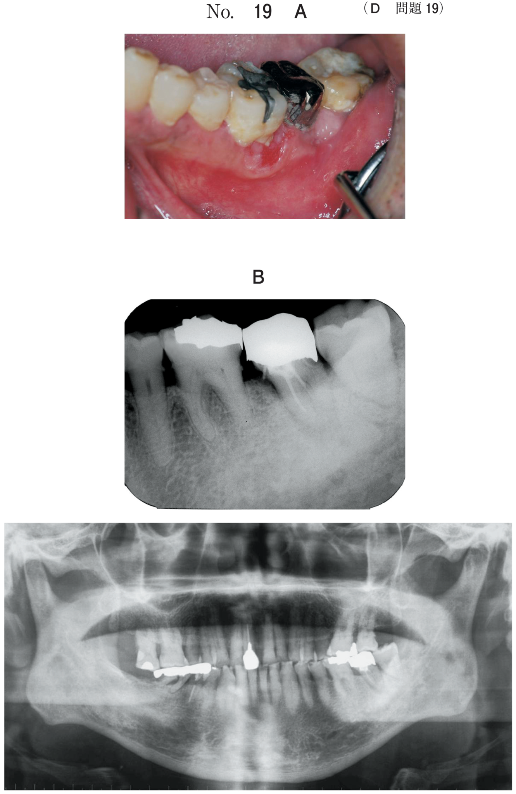

手術法：顎下腺摘出術
顎下腺摘出術の適応
- 顎下腺腫瘍（良性：多形腺腫、Warthin腫瘍など）
- 唾石症（腺体内唾石で口腔内からの摘出が困難な場合）
- 慢性顎下腺炎（繰り返す炎症）
手術手技（教科書p.683）
首を十分に伸展させた体位で行う。
- ①皮膚切開：下顎骨下縁の約2横指（1.5〜2cm）下方、皺に沿って約6cmの水平切開
- ②広頸筋を切断 → 顎下腺被膜を露出
- ③下顎縁に沿って顔面神経下顎縁枝を確認 → 剥離して上方へ押しやり保存
- ④顔面動静脈を下顎骨下縁で結紮・切断
- ⑤顎二腹筋から顎下腺を剥離
- ⑥顎下腺前面で顎舌骨筋後縁から顎下腺を後方に引き出す
- ⑦舌神経を確認・保存。顎下神経節（舌神経からの副交感神経枝）は切断
- ⑧Wharton管（顎下腺管）を結紮・切断
- ⑨顎下腺を摘出。ドレーンを留置し閉創
術中に損傷リスクのある構造
| 構造物 | 走行・位置 | 損傷時の症状 | 損傷頻度 |
|---|---|---|---|
| 顔面神経下顎縁枝 | 広頸筋の深層、下顎骨下縁に沿って走行 | 口角下制不能・口笛不能、患側の鼻唇溝消失 | 最も注意 |
| 舌神経 | 顎舌骨筋上面を走行。顎下神経節を介して顎下腺と連結 | 舌前2/3の知覚異常、味覚障害 | 注意 |
| 舌下神経 | 顎下腺の深部、舌骨舌筋の表面を走行 | 舌の運動障害（患側の舌偏位） | まれ |
- 顔面神経下顎縁枝の損傷：最重要。広頸筋切離時に最もリスクが高い（→ 103A62で出題）
- 損傷すると口角の下制不能 → 口笛が吹けない（口輪筋への枝が障害）（→ 106D32で出題）
- 下唇運動時に患側の下唇が下がらず非対称になる（→ 116C24で出題）
- 舌神経の損傷：顎舌骨筋後縁付近での操作時にリスク → 舌の知覚異常（→ 106D32で出題）
106D32の選択肢判定：顔面神経下顎縁枝が損傷されると何が起こるか
| 選択肢 | 関与する神経 | 判定 |
|---|---|---|
| a 閉眼不能 | 顔面神経頬骨枝・側頭枝（眼輪筋支配） | × 下顎縁枝とは無関係 |
| b 口笛不能 | 顔面神経下顎縁枝→頬枝（口輪筋支配に関与） | ○ |
| c 鼻唇溝の消失 | 顔面神経頬枝（頬骨筋・上唇挙筋支配） | × 下顎縁枝の損傷では患側の鼻唇溝が深くなる（対側との非対称） |
| d 舌の知覚異常 | 舌神経（三叉神経第3枝） | ○ |
| e 舌の運動障害 | 舌下神経（XII） | × 通常は損傷しない（深部走行） |
過去問で確認
口外法で顎下腺を摘出することとした。切開線を矢印で示した写真（別冊No.8）を別に示す。
皮膚切開後に最初に見える筋はどれか。1つ選べ。

b 広頸筋
c 僧帽筋
d 顎舌骨筋
e 顎二腹筋後腹
【解説】顎下部の皮膚切開後、皮下組織の直下で最初に現れる筋は広頸筋である。広頸筋は頸部の皮下に広く存在する薄い皮筋で、顎下腺被膜はこの広頸筋の深層に位置する。顎舌骨筋（d）や顎二腹筋後腹（e）は顎下腺をさらに剥離した深部で見える構造。咬筋（a）は下顎枝外側面、僧帽筋（c）は後頸部であり手術野に含まれない。
顎下腺摘出術の際に患者に説明すべき合併症はどれか。2つ選べ。
b 口角下垂
c 発汗異常
d 味覚障害
e 嚥下障害
【解説】顎下腺摘出術の合併症として口角下垂（b：顔面神経下顎縁枝の損傷）と味覚障害（d：鼓索神経の損傷。鼓索神経は舌神経に合流して走行し、舌前2/3の味覚を支配）を説明すべきである。閉眼不能（a）は顔面神経側頭枝・頬骨枝の障害で顎下腺手術では生じない。発汗異常（c）はFrey症候群であり耳下腺手術の合併症。嚥下障害（e）は通常生じない。
顎下腺摘出術で広頸筋を切離して顎下腺被膜を明示する際に、注意すべきなのはどれか。1つ選べ。
b 顔面神経
c 舌下神経
d 反回神経
e オトガイ神経
【解説】広頸筋の深層に顔面神経下顎縁枝が走行する。広頸筋を切離する際にこの枝を損傷すると口角の下制不能が生じる。舌神経（a）は顎舌骨筋後縁付近で注意するが、広頸筋切離の段階ではまだ到達しない。反回神経（d）は喉頭の神経であり顎下腺摘出とは無関係。
右側顎下腺摘出術を受けた患者の術後の下唇運動時の写真（別冊No.4）を別に示す。障害されているのはどれか。1つ選べ。
b 顔面神経
c 舌下神経
d 大耳介神経
e オトガイ神経
【解説】下唇運動時の非対称（患側の下唇が下がらない）は顔面神経下顎縁枝の障害を示す。下顎縁枝は口角下制筋・下唇下制筋・オトガイ筋を支配するため、損傷すると患側の下唇運動が障害される。舌神経（a）は舌の知覚、舌下神経（c）は舌の運動、大耳介神経（d）は耳介の知覚、オトガイ神経（e）はオトガイ部皮膚の知覚を担い、いずれも下唇の運動とは無関係。
38歳の男性。右側顎下部の違和感を主訴として来院した。3年前から食事時に右側顎下部の腫脹と疼痛とを繰り返していたという。口腔外から手術をすることとした。初診時のエックス線写真（別冊No.32A）とCT（別冊No.32B）とを別に示す。患者に術前に説明すべき合併症はどれか。2つ選べ。


b 口笛不能
c 鼻唇溝の消失
d 舌の知覚異常
e 舌の運動障害
【診断】食事時の顎下部腫脹・疼痛の繰り返し（唾疝痛）＋画像所見 → 顎下腺唾石症（腺体内唾石）。口腔外からの顎下腺摘出術が適応。
【解説】顎下腺摘出術の合併症として、顔面神経下顎縁枝の損傷による口笛不能（b）と、舌神経の損傷による舌の知覚異常（d）を術前に説明すべきである。閉眼不能（a）は顔面神経側頭枝・頬骨枝の障害で顎下腺手術では生じない。鼻唇溝の消失（c）は頬枝の障害であり下顎縁枝損傷では起きない。舌の運動障害（e）は舌下神経損傷だが通常は損傷リスクが低い。